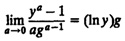
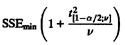
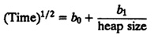
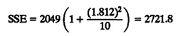
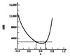
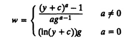
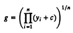

)
FIGURE 15.3 Scatter plot of the data for garbage collection study.
| Previous | Table of Contents | Next |
The Box-Cox transformation has the property that w has the same units as the response y for all values of the exponent a. All real values of a, positive or negative, can be tried. The transformation is continuous even at zero, since:

One way to determine the parameter a is to try regressions with several different values of a and to use the one that gives the smallest value of the sum of squared errors (SSE). A plot of the SSE versus a can be used to visually see the sensitivity of the SSE to a. Since the SSE generally varies by several orders of magnitude, a semilog plot with ln(SSE) on the vertical axis and a along the horizontal aids may be used.
In general, it is preferable to use simple values for a. For example, if a = 0.52 is found to give the minimum SSE and the SSE at a = 0.5 is not significantly higher, the latter value may be preferable. The 100(1– α) confidence interval for a includes all values of a for which the SSE is less than the following value:

where SSEmin is the minimum SSE and v is the number of degrees of freedom for the errors. If the confidence interval for a includes the value a = 1, then the hypothesis that the relationship is linear cannot be rejected. In other words, there is no need for the transformation. The following case study illustrates the application of the Box-Cox family of transformation.

| TABLE 15.10 Garbage Collection Times for Various Heap Sizes | |||
|---|---|---|---|
| Heap Size | Garbage Collection Time | Heap Size | Garbage Collection Time |
| 500 | 594.34 | 1600 | 63.64 |
| 600 | 247.42 | 1800 | 1.00 |
| 800 | 114.24 | 2000 | 1.00 |
| 1000 | 85.64 | 2200 | 1.00 |
| 1200 | 49.60 | 2400 | 1.00 |
| 1400 | 50.30 | 2600 | 1.00 |
FIGURE 15.3 Scatter plot of the data for garbage collection study.
The transformed data along with the linear regression line is plotted in Figure 15.3. The points do not appear to be close to the straight line. Suppose we want to test the hypothesis that the exponent on time is different than a half. The Box-Cox family of transformation can be used for this purpose. Using several values of a ranging from –0.4 to 0.8, the SSE is computed for each value. Values of the SSE as a function of the exponent a are plotted in Figure 15.4. The minimum SSE of 2049 occurs at a = 0.45. Since 0.95-quantile of a t-variate with 10 degrees of freedom is 1.812, a horizontal line is drawn at


FIGURE 15.4 Plot of SSE versus the exponent a for the garbage collection study.
The line intersects the SSE curve at a = 0.2465 and a = 0.5726. Thus, the 90% confidence interval for a is (0.2465, 05726). Since the interval includes 0.5, we cannot reject the hypothesis that the exponent is 0.5.
The Box-Cox family of transformation, as described here, cannot be used if there are some negative or zero values in the measured responses. The solution is to add a constant amount c to all y’s replacing them with y + c. Thus, with a shift of c, the Box-Cox family of transformation becomes

where

In this case, c becomes another parameter in addition to a, which needs to be estimated.
Any observation that is atypical of the remaining observations may be considered an outlier. Notice the emphasis on the word "may" in the last sentence. Including the outlier in the analysis may change the conclusions significantly. Excluding the outlier from the analysis may lead to a misleading conclusion if the outlier in fact represents a correct observation of the system behavior. A number of statistical tests have been proposed to test if a particular value is an outlier. Most of these tests assume a certain distribution for the observations. If the observations do not satisfy the assumed distribution, the results of the statistical test would be misleading. In practice, the easiest way to identify outliers is to look at the scatter plot of the data. Any value significantly away from the remaining observations should be investigated for possible experimental errors. Other experiments in the neighborhood of the outlying observation may be conducted to verify that the response is typical of the system behavior in that operating region. Once the possibility of errors in the experiment has been eliminated, the analyst may decide to include or exclude the suspected outlier based on intuition. One alternative is to repeat the analysis with and without the outlier and state the results separately. Another alternative is to divide the operating region into two (or more) subregions and obtain a separate model for each subregion.
| Previous | Table of Contents | Next |
){kind=link}
){kind=link}
){kind=link}